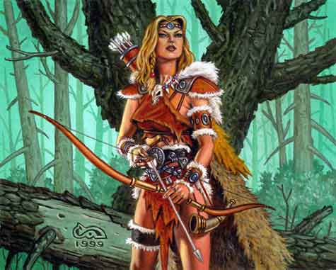
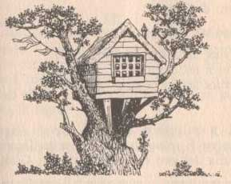
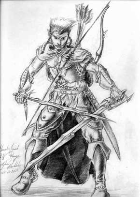
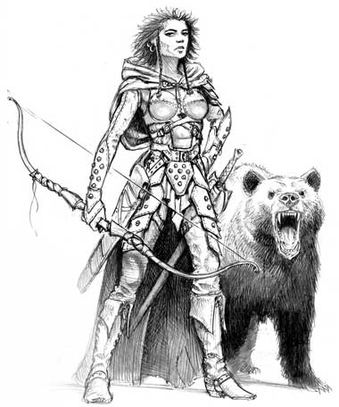
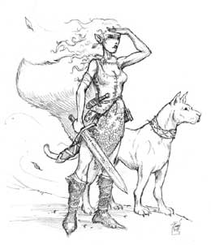
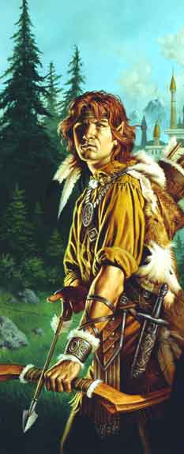

Nota di gioco: I Custodi della Foglia d'Oro possono considerarsi un sorta di paladini di Arlinir. Ai fini delle regole sulle competenze nelle armi e ai fini della tavola dei punti esperienza devono considerarsi della classe Warrior-Ranger (Player's Handbook).
I Custodi della Foglia d'Oro sono una nuova classe di personaggi areliana. Si tratta di una classe combattente connessa alla natura delle grandi foreste dove vivono gli elfi alti, quelli silvani e gli elfi grigi. I Custodi della Foglia d'Oro svolgono una funzione importante nella società elfica. Nonostante, infatti, gli elfi siano creature delle foreste (almeno quelli appartenenti alle suddette razze) ed abbiano sviluppato una naturale capacità di viverci in una speciale simbiosi, varie parti di queste zone sono ancora inesplorate e per loro pericolose (sono gli stessi elfi a voler preservare tale natura incontaminata). Per tale motivo alcuni fra i migliori elfi sono addestrati e avvicinati al Culto di Arlinir al fine di divenire le migliori guide del popolo elfico nelle foreste. Costoro, infatti, unendo le loro capacità specialistiche all'ispirazione che direttamente la dea dona loro (sotto forma di poteri di origine divina) sono dotati di un talento che le migliori guide delle foreste non riescono ad eguagliare.
IL RUOLO DEI CUSTODI DELLA FOGLIA D'ORO
I Custodi della Foglia d'Oro hanno un duplice ruolo nella società elfica. Da un lato il loro stretto legame con la natura gli impone di trascorrere parte significativa del loro tempo nelle foreste, dall'altro la fede in Arlinir e il legame con la comunità elfica fanno mantenere loro un costante contatto con la civiltà. I Custodi della Foglia d'Oro, infatti, non sono selvaggi guerrieri delle foreste ma sofisticate guide che spinte dalla fede nella loro dea fungono da anello di congiunzione tra la comunità elfica e la natura selvaggia.
Doveri, Privilegi e Retribuzione dei Custodi della Foglia d'Oro
I Custodi della Foglia d'Oro sono le migliori guide del popolo elfico e quindi sono spesso utilizzate dalle loro comunità per missioni di scorta, di recupero o di esplorazione. Il loro legame con Arlinir però li tiene legati strettamente al culto della dea. Qualora qualcuno voglia assumere un Custode come guida deve, infatti, recarsi presso un tempio di Arlinir dove potrà trovare i Custodi che ivi risiedono. Il tempio è, infatti, rappresenta il luogo ove i Custodi trascorrono la maggior parte del loro tempo quando vivono nelle comunità elfiche. I Custodi ricevono ospitalità gratuita presso ogni tempio di Arlinir.
Esistono due tipi di attività che svolgono i Custodi:
Le Missioni per la Comunità: Sono missioni che il Custode svolgono, se desiderano, per aiutare gli appartenenti alla comunità elfica per interessi pubblici o privati. Ogni mese, qualora il Custode risiede in un tempio per almeno 10 giorni, vi è una certa possibilità che sia richiesto il suo aiuto da parte di qualche membro della comunità. Si tratta di missioni di guida che non sono di norma pericolose e non richiedono che il Custode combatta. La percentuale (che va tirata allo scadere del 10 giorno) la durata della missione e la paga giornaliera cambiano a seconda del livello di esperienza del Custode (tenendo presente che raramente è richiesto l'intervento di Custodi di alto livello per compiere tali semplici missioni). Il Custode è libero di decidere se accettare o meno la missione dopo averne valutato la durata. Se l'accetta (dovrà partire al massimo entro 3 giorni) comunica tale sua decisione all'Alto Sacerdote che gestisce il tempio fornendogli i dettagli della stessa (in casi particolari e per gravi motivi l'Alto Sacerdote può impedire lo svolgimento della missione). Per il suo lavoro il Custode sarà remunerato con una paga giornaliera determinata in base a questa tabella:
| Livello di esperienza del Custode | % di Ingaggio | Durata della Missione | Paga giornaliera |
| 1° livello di esperienza | 55% | 1d10+1 giorni | 3 querce |
| 2° livello di esperienza | 50% | 1d10+2 giorni | 4.5 querce |
| 3° livello di esperienza | 45% | 1d10+3 giorni | 6 querce |
| 4° livello di esperienza | 40% | 1d10+5 giorni | 10 querce |
| 5° livello di esperienza | 35% | 2d10+1 giorni | 15 querce |
| 6° livello di esperienza | 30% | 2d10+2 giorni | 20 querce |
| 7° livello di esperienza | 25% | 2d10+3 giorni | 30 querce |
| 8° livello di esperienza | 20% | 2d10+5 giorni | 40 querce |
| 9° livello di esperienza | 15% | 3d10+1 giorni | 50 querce |
Le Missioni per la Fede: I Custodi della Foglia d'Oro hanno il dovere di compiere le missioni per il culto di Arlinir che il Sommo Sacerdote con la sede più vicina al tempio nel quale risiedono decide di affidargli. Ogni inizio anno vi è il 30% (1-2-3 su 1d10) che sia affidata loro tale missione (si tiri 1d12 per stabilire in che mese dovranno compierla). Per lo svolgimento di tale missione possono decidere di farsi accompagnare ma l'intera gestione della missione ricade unicamente sulle loro spalle. Per tali missioni, inoltre, non ricevono alcuna retribuzione patrimoniale (ma quando la completano con successo ricevono un X di gioco di ruolo). La missione che gli è affidata può avere durata e complessità variabile ma è generalmente commisurata al livello del Custode e alle capacità che ha dimostrato di avere. Svolgere tale missione è ritenuto un grande onore non solo per i Custodi ma anche per gli altri i fedeli di Arlinir.
I REQUISITI PER DIVENIRE CUSTODE DELLA FOGLIA D'ORO
I Custodi della Foglia d'Oro possono appartenere solo alla razza degli Elfi e a quella dei Mezzi Elfi, ma devono avere i seguenti punteggi minimi di abilità (che rappresentano i requisiti primari della classe):
| Destrezza | 15 |
| Saggezza | 13 |
| Costituzione | 12 |
I Custodi della Foglia d'Oro ottengono 1d10 punti ferita per livello dal 1° fino al 9° livello di esperienza. Dopo il 9° livello costoro ottengono 3 punti ferita per livello di esperienza.
CARATTERISTICHE DEI CUSTODI DELLA FOGLIA D'ORO
Prima
di descrivere i poteri e le limitazioni che caratterizzano questa classe occorre
fare tre precisazioni fondamentali.
1) In primo luogo tutti i poteri e gli
incantesimi che costoro possono utilizzare al giorno si riattivano nel momento
di flusso dell'energia divina di Arlinir.
2) Foresta: Per potersi considerare in foresta costoro devono
trovarsi in una zona di dimensioni rilevanti che, per la flora presente, possa
essere definita una foresta oppure un bosco. Non sarà considerata una foresta,
ad esempio, una collina oppure una montagna in cui è presente una vegetazione
anche lussureggiante composta da alberi ed arbusti.
3) Animali: Tutti i poteri che
svolgono i loro effetti sugli animali non funzionano sulle creature mostruose,
le summonate, gli insetti, i serpenti, tutti gli animali marini
e d'acqua dolce e quelli non intelligenti (int. 0) o con intelligenza low o
superiore (5 o +).
Purezza dei sentimenti: L'unico allineamento che i Custodi della Foglia d'Oro possono scegliere è Neutral Good.
Libertà di movimenti: I Custodi della Foglia d'Oro possono indossare solo corazze di tessuto o chain mail elfiche. Inoltre non possono utilizzare alcuno scudo.
Armi delle Fede: I Custodi della Foglia d'Oro possono utilizzare solo le armi che possono utilizzare i chierici di Arlinir.
Cura della Foresta: I Custodi della Foglia d'Oro devono dedicare 60 giorni (giorni lavorativi che però possono distribuire a piacere nel corso dell'anno) per la cura della foresta. Durante questi giorni si occupano della fauna e della flora presente nei dintorni di un tempio di Arlinir e incidono le rune elfiche sulle piante sacre. Per tale lavoro non prendono alcuna remunerazione, in compenso non sono tenuti al pagamento del 10% al culto di Arlinir nonché ad impiegare giorni di preghiera per gli incantesimi ricevuti.
Inabilità contro l'innaturale: I Custodi della Foglia d'Oro ogni volta che affrontano nemici non viventi o creature di altri piani di esistenza (costruiti, non morti, demoni ed elementali) subiscono una penalità di -2 ai tiri per colpire e +2 all'iniziativa ai loro attacchi contro costoro.
Rispetto della Fauna: I Custodi della Foglia d'Oro adorano la natura e gli animali. Per questo motivo trattano tutti gli animali con profondo affetto e non utilizzano in alcun caso gli stessi come cavalcature personali. Inoltre qualora assistano personalmente alla morte (non per cause naturali) di un animale restano in uno stato di depressione subendo una penalità di -1 a tutti i tiri (-2 se ha partecipato alla sua uccisione) per i seguenti 1d4 giorni.
Dimora Boschiva: I Custodi della Foglia d'Oro in un qualsiasi momento prima di poter effettuare il training di 5° livello di esperienza devono trovare un luogo nella foresta che li affascini per costruirci una dimora (solitamente una baita). Deve trattarsi di un luogo per loro particolare e abbastanza distante dalle altre comunità (almeno 10 km.). Dal 5° livello in poi costoro dovranno trascorrere almeno 30 giorni all'anno in tale dimora a contatto con la natura (in tale occasione potranno però effettuare attività da loro scelte).

Sopravvivenza nelle Foreste: I Custodi della Foglia d'Oro sono in grado di sopravvivere trovando da mangiare (radici, frutti, insetti, ecc...) e da bere (pozze, foglie con rugiada, ecc...) nelle foreste. Attraverso tale abilità non potrà però aiutare altre creature, inoltre deve tenersi presente che il Custode nel caso sia privo di provviste e si nutra attraverso tale abilità resterà sempre sulla linea di confine della malnutrizione e mangerà cibi dal gusto non piacevole, anzi a volte ripugnante.
Orientamento Straordinario: I Custodi della Foglia d'Oro, all'interno delle foreste sono sempre in grado di determinare i punti cardinali nonché le distanze percorse senza possibilità di errore. Quest'abilità svanisce non appena costoro non si trovano in una foresta.
Andamento Mimetico: I Custodi della Foglia d'Oro se si muovono da soli o ad almeno 15 metri da altre creature, sono praticamente inosservabili nella foresta, poiché grazie al loro legame con la natura ed ad i loro movimenti leggiadri non attirano assolutamente l’attenzione. Solo creature dotate di sensi particolarmente sviluppati possono rendersi conto della presenza del Custode. Inoltre, se sussistono queste condizioni ed attaccano un avversario non dotato di sensi particolarmente sviluppati che ignori la loro presenza lo sorprendono automaticamente. Il custode non può sparire con questa abilità alla vista di chi sia consapevole della sua presenza (anche se non è direttamente nel suo campo visivo) e qualora sia ingombrato o sia a stretto contatto con un'altra creatura. Il custode può muoversi del suo normale fattore movimento in questa modalità ma qualora ponga in essere attività complesse o rumorose, come un attacco od il lancio di una magia, costui interromperà immediatamente l'andamento mimetico divenendo perfettamente visibile.
Sparire fra le Frasche: I Custodi della Foglia d'Oro, quando si trovano in una foresta, possono cercare di sparire dalla vista delle altre creature. Per effettuare questa manovra devono correre nei boschi per un intero round al termine del quale (dopo aver effettuato tutto il loro movimento, non essendo sufficiente solo un mezzo movimento) costoro hanno una percentuale pari al 30% + 5% per livello oltre il primo (fino al massimo di 95%) di sparire alla vista di tutte le creature si trovino ad almeno 12 metri di distanza dallo stesso (anche se consapevoli della sua presenza). Da tale momento in poi il custode si considererà in Andamento Mimetico facendo perdere immediatamente le sue tracce. Il custode non può utilizzare tale abilità se è ingombrato oppure se il suo movimento risulta impedito od ostacolato per motivi diversi dal terreno di foresta che desidera attraversare per sparire alla vita delle altre creature (si pensi alla penalità di 1/2 movimento dovuta ad un colpo critico subito ad una gamba od alla condizione di combattimento incapacitato).
Seguire Tracce nei Boschi: I Custodi della Foglia d'Oro possono cercare tracce nella foresta come se fossero ranger aventi la competenza tracking (senza doverla acquisire) ottenendo un bonus alla prova di +2 . Per seguire tracce all'esterno delle foreste devono, invece, acquisire la competenza ma una volta acquisita la utilizzano come se fossero ranger (Ranger Handbook).
Controllo delle Emozioni Animali: I Custodi della Foglia d'Oro utilizzando la loro conoscenza degli animali e il fascino che deriva dal loro legame con la dea velata possono provare a modificare i comportamenti tenuti dagli animali che incontrano.
I comportamenti degli animali possono essere schematizzati in questo modo:
| Atteggiamento | Descrizione |
| Ostile | Aggressivo, violento ed infuriato costui attaccherà le creature sopraggiunte. |
| Minaccioso | Apertamente belligerante, emette versi minacciosi nei confronti delle creature e molto probabilmente le attaccherà qualora queste non si allontanino. |
| Diffidente* | Nervoso e sospettoso nei confronti delle creature sopraggiunte e sarà pronto a difendere se stesso e le proprie cose con la forza. |
| Indifferente | Non nutre alcun sentimento specifico nei confronti delle creature che incontra, non le attaccherà ma non si lascerà toccare o avvicinare a meno di 10 metri. |
| Amichevole | Si sente ben disposto nei confronti delle altre creature, non attaccherà e si lascerà avvicinare da costoro. |
| Impaurito | L'animale è impaurito e cercherà di scappare alla prima occasione. |
*Si noti che chi possiede la competenza Animal Handling, se supera un check può provare (impiegando un intero round) a modificare esclusivamente verso il basso e di un grado l'atteggiamento di un animale che sia al massimo diffidente (in caso in cui il check fallisca l'atteggiamento dell'animale salirà automaticamente di un grado verso l'alto, se viene tirato un 20 naturale salirà automaticamente di 2 gradi, se invece si tira un 1 naturale potrà scegliere di farlo scendere di due gradi). All'animale è concesso, per evitare gli effetti, un tiro salvezza contro incantesimi al quale saranno applicati i medesimi modificatori previsti per il controllo del Custode ad esclusione di quelli relativi del livello di esperienza e quello dovuto alla medesima competenza. In ogni caso può utilizzarsi questa competenza una sola volta al giorno nei confronti della medesima creatura. Effetti di questa competenza possono cumularsi al controllo del Custode.
Per utilizzare questo potere il Custodi della Foglia d'Oro deve trovarsi a vista dell'animale, entro 20 metri da questo ed impiegare un intero round cercando di stabilire un contatto emotivo con lo stesso (non occorre concentrazione). Questo potere può essere utilizzato anche durante un combattimento. Al termine del round l'animale dovrà superare un tiro salvezza contro incantesimi. Al tiro salvezza della creatura si applicano i seguenti modificatori:
| 1° - 3° livello di esperienza del Custode della Foglia d'Oro | 0 |
| 4° - 6° livello di esperienza del Custode della Foglia d'Oro | -1 |
| 7° - 9° livello di esperienza del Custode della Foglia d'Oro | -2 |
| 10° - 12° livello di esperienza del Custode della Foglia d'Oro | -3 |
| 13° - 15° livello di esperienza del Custode della Foglia d'Oro | -4 |
| 16° + livello di esperienza del Custode della Foglia d'Oro | -5 |
| Qualora il Custode abbia la competenza Animal Handling e superi il check | -1 |
| Qualora il Custode abbia la competenza Animal Lore e superi il check | -1 |
| Qualora i compagni del Custode abbiano compiuto azioni ostili nei confronti della creatura | +1 |
| Qualora i compagni del Custode compiano azioni ostili nei confronti della creatura nel round | +2 |
| Se si tratta di una creatura addestrata che rispettando gli ordini impartiti | +2 |
Se il tiro salvezza riesce avrà resistito non subendo alcun effetto. Se, invece, fallisce il Custode potrà modificare a suo piacere l'atteggiamento dell'animale di un grado (verso l'alto o verso il basso). Tale modifica si applica solo nei confronti di tutti i compagni del Custode. In ogni caso può utilizzarsi questo potere una sola volta al giorno nei confronti della medesima creatura.

Coordinazione Straordinaria: I Custodi della Foglia d'Oro hanno un'incredibile coordinazione. Per tale motivo ottengono un bonus di +1 a tutti i check di destrezza, ottengono una riduzione di 2 punti sul costo del colpo speciale di combattimento "attacco extra" (cumulabile con la riduzione dovuta alla competenza quickness), inoltre possono utilizzare due armi senza subire alcuna penalità ed ottengono un bonus di + 10% alla possibilità di schivare.
Bravura nell'uso degli Archi: I Custodi della Foglia d'Oro partono con il grado nelle armi esperto in tutti e quattro i tipi di arco che possono utilizzare. Inoltre se posseggono la competenza necessaria ottengono un bonus di +1 a tutte le prove necessarie alla creazione di questi archi e delle loro frecce.
Fascino del Custode

1° livello di
esperienza, Animal
Scent
Animal
Scent
|
Sfera di riferimento |
Animal |
|
Range |
0 |
|
Duration |
1 ora |
|
Area of Effect |
Il Custode della Foglia d'Oro |
|
Components |
S |
|
Casting Time |
3 |
|
Saving Throw |
Negates |
Il Custode della Foglia d'Oro invoca i poteri di Arlinir per confondere il proprio odore con quello di un animale. Potrà ottenere l'odore di un qualsiasi normale animale conosca ma non di mostri. Tutti coloro proveranno ad annusare l'odore del Custode della Foglia d'Oro e falliranno un tiro salvezza contro incantesimi mentali non lo riconosceranno e saranno convinti di aver annusato l'odore di quell'animale, se invece supereranno il tiro salvezza si renderanno conto che si tratta in realtà dell'odore del Custode della Foglia d'Oro.
2° livello di esperienza, Movimento Fulmineo: Il Custode può uno scatto correndo a grande velocità, costui potrà aumentare, per un intero round, il proprio fattore movimento del 50% (arrotondandolo per difetto). Ogni giorno, dopo essersi adeguatamente riposato, il Custode può effettuare questo scatto per un numero di rounds (anche consecutivi) pari ad 1/3 del proprio punteggio di costituzione (arrotondandolo per difetto). Si noti che, trattandosi di una free action, il Custode può effettuare anche un mezzo movimento (accelerato) assieme ad un'altra azione complessa.
3° livello di
esperienza, Wolf Defensor
Wolf
Defensor
|
Sphere : |
Animal |
|
Range : |
0 |
|
Components : |
V,S,M |
|
Duration : |
1 hour |
|
Casting Time : |
1 round |
|
Area of Effect : |
Un lupo grigio |
|
Saving Throw : |
None |
Questa magia può essere lanciata solo in aree boschive. A seguito del lancio di questa magia il Custode della Foglia d'Oro vedrà arrivare dai vicini boschi un lupo grigio pronto a difenderlo. Il lupo seguirà il Custode della Foglia d'Oro standogli vicino e lo difenderà combattendo contro tutti coloro lo minacciano anche fino alla morte. Al termine della magia il lupo farà ritorno (se ancora vivo) nella foresta. Il lupo può essere usato sono come difesa, non attaccherà nessuna creatura che non abbia intenzione di nuocere direttamente e attualmente al Custode della Foglia d'Oro. Al lupo non potrà essere assegnato nessun altro comando se non quello di difendere eventualmente il Custode della Foglia d'Oro .Il lupo non lascerà la foresta per nessun motivo e non entrerà in dungeons o edifici che non siano grotte naturali, se il Custode della Foglia d'Oro lo farà la magia avrà subito termine. Il componente materiale di questo incantesimo è una grossa porzione di carne di pecora di primissima scelta compressa ed essiccata ( 2 lbs. e sufficiente per un creatura M a vivere 2 giorni) che si consuma al lancio della magia ed ha un valore di mercato pari a 5 g.p.
4° livello di
esperienza, Eagle Scout
Eagle Scout
|
Sphere : |
Animal |
|
Range : |
0 |
|
Components : |
V,S,M |
|
Duration : |
Speciale |
|
Casting Time : |
1 round |
|
Area of Effect : |
Speciale |
|
Saving Throw : |
None |
I Custodi della Foglia d'Oro possono usare questa magia, la magia non può essere utilizzata di notte, in zone al chiuso, o in mare aperto a più di 50 km. dalla costa più vicina. Dopo il lancio della magia nel cielo sopra il Custode della Foglia d'Oro si vedrà un bellissimo esemplare di aquila reale volteggiare volando in tondo. L'aquila con la sua incredibile vista e dalla sua posizione sopraelevata cercherà di avvistare tutti i potenziali pericoli per il Custode della Foglia d'Oro entro un raggio di massimo 10 km. dalla sua posizione, restando però sempre a quota elevata. L'aquila riterrà pericolose gruppi di inseguitori, la presenza di grossi predatori, mostri e anche disastri naturali come un grosso incendio ecc... ecc... Qualora l'aquila ritenga che vi sia un pericolo per il Custode della Foglia d'Oro allora lo avviserà con un segnale sonoro. L'aquila impiegherà un turno per verificare la presenza dei pericoli e poi sparirà volando lontano. Ovviamente l'aquila non farà nessuna valutazione di rapporto tra forza del Custode della Foglia d'Oro e pericolo ma avviserà qualora si trovi in presenza di quello che ha individuato come un potenziale pericolo, ad esempio non avviserà della presenza di un singolo lupo ma avviserà qualora scorga un branco di lupi o un singolo grosso esemplare di orso. Il Custode della Foglia d'Oro non potrà valutare la grandezza del pericolo dal comportamento dell'aquila, inoltre la vista dell'aquila sarà soggetta agli ostacoli che si trovano a terra. In base a questo ultimo concetto, quindi, se l'aquila controllerà una zona di pianura la sua possibilità di individuare pericoli sarà massima, mentre se dovrà controllare una zona di densa foresta non avrà possibilità di individuare creature che nella foresta viaggiano in modo difficile da notare, come elfi, troll ecc... ecc... sarà il master che discrezionalmente dovrà valutare se l'aquila sia in grado o meno di individuare un determinato pericolo. Il Custode della Foglia d'Oro potrà però a piacere ridurre l'area che dovrà essere controllata dall'aquila fino a restringerla ad 1km. di raggio. Il componente materiale di questa magia è un fischietto di legno riccamente rifinito con il quale emettere un segnale di richiamo (componente vocale) che ha un valore minimo di 10 gp. e non si consuma al lancio della magia.

5° livello di
esperienza, Strenght of the Bear
Strenght
of the Bear
|
Sphere : |
Animal |
|
Range : |
0 |
|
Components : |
V,S,M |
|
Duration : |
1 round per level |
|
Casting Time : |
1 round |
|
Area of Effect : |
The caster |
|
Saving Throw : |
None |
Questa magia dona al Custode della Foglia d'Oro che la lancia la forza di un potente orso. Per tutta la durata della magia la forza del Custode della Foglia d'Oro si considererà come 18/00 a tutti i fini (tiro per colpire, danno, peso trasportato e prove di abilità). Il componente materiale di questo incantesimo è una miniatura in argento di un canino di un orso dal costo di 5 g.p. e dal peso di 1/10 di libbra che si consuma al lancio della magia.
6° livello di esperienza, Rigenerazione Prodigiosa (costante): A partire da questo livello il Custode della Foglia d'Oro, se si trova in una foresta, e riposa (basta il riposo regolare non occorrendo il riposo totale) rigenera 1 punto ferita all'ora, fino ad un massimo di 8 punti ferita nell'arco delle 24 ore, rigenerando esclusivamente punti ferita persi comunemente. Senza che, quindi, questa rigenerazione guarisca gli effetti dei colpi critici né i danni da acido subiti. Non trattandosi di una cura magica questa forma di rigenerazione non permette al Custode di uscire da solo da uno stato comatoso.
7° livello di esperienza, Forma dei Boschi (1 volta al giorno): A partire da questo livello il Custode della Foglia d'Oro può trasformarsi (con una sorta di Polymorph Self, incantesimo dei maghi, 4° livello di potere) in una creatura a scelta tra un bear brown, eagle giant e wolf dire. Potrà restare in questa forma fino a 24 ore (il Custode si rende conto del momento in cui il suo potere sta per finire). Sarà comunque libero di ritrasformarsi nella forma originaria anche prima della fine della durata della magia, ma una volta che si sarà ritrasformato il cambiamento sarà, per quella giornata, definitivo. Ogni trasformazione richiede un intero round durante il quale il Custode sarà considerato stordito (stunned). Si noti che a differenza delle altre magie non occorre che il custode mantenga la concentrazione per utilizzare questo potere. Una magia dispel magic utilizzata con successo imporrà il custode a ritrasformarsi obbligatoriamente nel round successivo a quello in cui la magia è stata dissolta.
8° livello di esperienza, Movimento Libero (1 volta al giorno): A partire da questo livello il Custode della Foglia d'Oro può lanciare, su se stesso e sempre qualora si trovi in una foresta, l'incantesimo Free Action (cleric spell, 4° lvl potere) come se fosse un chierico di pari livello di esperienza (si considera un lancio a tutti gli effetti, ad es. sulla concentrazione e necessità del componente materiale).
9° livello di esperienza, Violenza Animale (1 volta al giorno): A partire da questo livello il Custode della Foglia d'Oro può lanciare, esclusivamente sull'animale che controlla con il Fascino del Custode, l'incantesimo Animal Growth (cleric spell, 5° lvl potere) come se fosse un chierico di pari livello di esperienza. Non può lanciare, però, la forma inversa che permette di ridurre di dimensioni gli animali.
